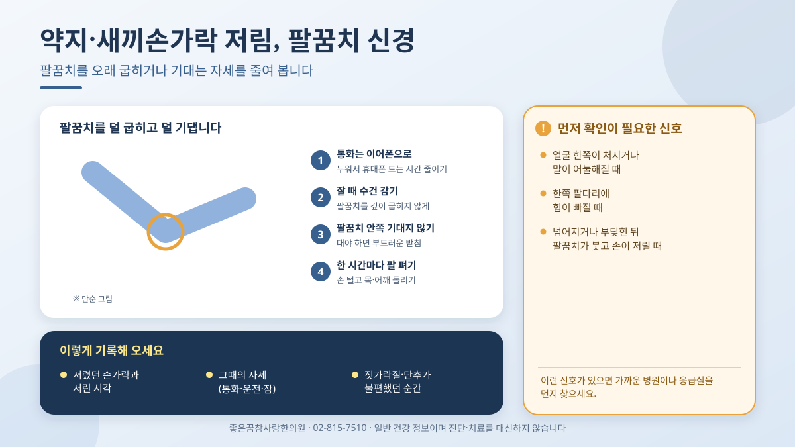

이종호 한의사 감수좋은꿈참사랑한의원 대표원장 (한의사 면허번호 19769)발행 2026-11-26 · 수정 2026-11-26
이 글의 차례
침대에 누워 휴대폰을 귀에 대고 통화를 하다 보면 어느새 새끼손가락과 약지가 찌릿찌릿합니다. 전화를 끊고 팔을 펴서 털면 조금 나아지지만, 다음 날 운전대를 오래 잡고 있을 때 또 같은 손가락이 저립니다. 아침에 일어나면 손이 둔하게 느껴지는 날도 생깁니다.
팔꿈치 안쪽 뼈가 튀어나온 자리를 책상 모서리에 부딪혔을 때 새끼손가락까지 짜릿하게 울린 경험이 있으실 겁니다. 그 자리를 지나는 신경이 척골신경입니다. 이 신경이 팔꿈치 안쪽의 좁은 길에서 오래 눌리거나 당겨지면 새끼손가락과 약지 쪽이 저리고 손힘이 빠질 수 있는데, 이를 팔꿈치 척골신경 저림, 주관증후군이라고 부릅니다.
손이 저린 원인으로는 손목터널증후군이 더 널리 알려져 있지만, 팔꿈치에서 오는 저림도 적지 않습니다. 저린 손가락이 어디인지만 잘 살펴도 방향이 꽤 달라집니다.
진료실에서는 "손목이 문제인 줄 알았어요"라는 말을 자주 듣습니다. 저림은 손끝에서 느껴지니 손목부터 의심하게 되는 것이 자연스럽습니다. 그래서 저는 저린 손가락을 하나씩 짚어 보시라고 먼저 부탁드립니다.
왜 팔꿈치에서 손가락이 저릴까요
척골신경은 목에서 나와 겨드랑이를 지나 팔 안쪽을 따라 내려옵니다. 팔꿈치에서는 안쪽 뼈 뒤의 홈을 지나는데, 이곳은 피부 바로 아래라 쿠션이 거의 없습니다. 부딪히면 찌릿하게 울리는 이유가 여기에 있습니다.
팔꿈치를 굽히면 이 홈을 지나는 길이 당겨지고 좁아집니다. 팔꿈치를 깊이 굽힌 채 오래 있으면 신경이 늘어나고 눌리는 시간이 길어집니다. 통화하는 자세, 팔베개를 하고 자는 자세, 팔꿈치를 책상에 대고 턱을 괴는 자세가 모두 여기에 해당합니다.
이 신경은 손바닥 쪽에서 새끼손가락 전체와 약지의 새끼손가락 쪽 절반의 감각을 맡습니다. 또 손가락을 벌리고 모으는 작은 근육들과 엄지와 검지 사이의 근육 일부를 움직이게 합니다. 그래서 오래 눌리면 저림뿐 아니라 손끝 힘이 빠지는 느낌도 생깁니다.
예전에 팔꿈치를 다쳤거나, 팔꿈치 관절이 닳아 뼈가 자라난 경우, 팔꿈치를 반복해서 굽혔다 펴는 일을 오래 해 온 경우에도 이 길이 좁아지기 쉽다고 알려져 있습니다.
저린 손가락으로 나눠 봅니다
손이 저리다고 모두 같은 곳에서 오는 것은 아닙니다. 저린 손가락을 기준으로 대략 이렇게 나눠 볼 수 있습니다.
- 팔꿈치 척골신경 저림: 새끼손가락과 약지의 새끼손가락 쪽 절반이 저리고, 손등의 새끼손가락 쪽도 함께 저릴 수 있습니다. 팔꿈치를 오래 굽히면 심해집니다.
- 손목터널증후군: 엄지, 검지, 중지와 약지의 엄지 쪽 절반이 저리고, 새벽에 손이 저려 깨는 일이 많습니다.
- 손목 척골신경 압박: 새끼손가락과 약지가 저리지만 손등은 괜찮은 경우가 많고, 자전거 손잡이나 공구를 손바닥 새끼 쪽으로 오래 누를 때 생기기도 합니다.
- 목에서 내려오는 저림: 목을 움직이거나 고개를 젖힐 때 어깨와 팔을 따라 저림이 함께 내려오고, 목과 어깨 통증이 같이 있는 경우가 많습니다.
- 당뇨 등 전신 원인: 양손, 양발 끝이 장갑과 양말 모양으로 함께 저리는 경우가 많습니다.
약지를 반으로 나눠 엄지 쪽 절반과 새끼 쪽 절반을 각각 살살 만져 보세요. 새끼 쪽 절반만 둔하게 느껴진다면 척골신경 쪽을 의심해 볼 수 있습니다. 다만 저림은 서로 겹치기도 해서, 진찰과 검사를 거쳐 정리하는 것이 순서입니다.
집에서 해 볼 수 있는 간단한 확인
팔꿈치를 끝까지 굽히고 손목을 살짝 뒤로 젖힌 채 1분쯤 그대로 있어 보세요. 그 사이 새끼손가락과 약지가 저려 오면 팔꿈치에서 신경이 당겨지는 흐름을 생각해 볼 수 있습니다. 저림이 강하게 오면 바로 팔을 펴고 멈추세요.
엄지와 검지 끝으로 종이 한 장을 집고 다른 사람이 살짝 당겨 보게 하는 방법도 있습니다. 저린 쪽 손이 종이를 쥐기 어려워 엄지 끝마디를 굽혀 버티게 된다면 손 안쪽 작은 근육의 힘이 약해졌을 수 있습니다.
손등을 위로 하고 손가락을 쫙 벌렸다 모아 보세요. 양손을 비교했을 때 저린 쪽 새끼손가락이 잘 모이지 않거나, 엄지와 검지 사이 손등의 살이 반대쪽보다 꺼져 보인다면 진료를 미루지 않는 것이 좋습니다.
이런 자세가 팔꿈치를 오래 굽히게 합니다
하루를 돌아보면 팔꿈치를 굽힌 채 보내는 시간이 생각보다 깁니다.
- 휴대폰을 귀에 대고 오래 통화하거나, 누워서 휴대폰을 얼굴 앞에 들고 보는 자세
- 팔베개를 하거나, 두 손을 모아 얼굴 밑에 넣고 옆으로 자는 자세
- 책상이나 창틀, 자동차 문틀에 팔꿈치 안쪽을 대고 기대는 습관
- 운전대 위쪽을 잡고 팔꿈치를 깊이 굽힌 채 오래 운전하는 자세
- 키보드를 너무 가깝게 두고 팔꿈치를 좁게 굽혀 타이핑하는 자세
특히 잠잘 때는 몇 시간씩 같은 자세로 있게 되어, 아침에 일어날 때 손이 저리고 둔하다는 말씀을 많이 하십니다. 잠자는 동안 팔꿈치를 덜 굽히는 것만으로도 아침의 손이 달라질 수 있습니다.
저림이 오래되면 손이 서툴러집니다
저림이 짧게 왔다 가는 시기에는 대수롭지 않게 넘기기 쉽습니다. 그런데 신경이 눌리는 시간이 길어지면 손가락 끝의 힘이 빠지며 단추 채우기, 젓가락질, 병뚜껑 따기가 서툴러질 수 있습니다.
새끼손가락이 다른 손가락과 잘 붙지 않고 조금 벌어진 채 있거나, 주머니에 손을 넣을 때 새끼손가락이 자꾸 걸린다는 분도 있습니다. 이런 변화는 저림보다 더 주의 깊게 봐야 하는 신호입니다.
그래서 저는 저림의 세기보다 손이 하는 일이 달라졌는지를 함께 여쭙습니다. 손이 서툴러졌다면 신경과나 정형외과에서 신경전도검사를 받아 신경이 얼마나 눌렸는지 확인해 보시도록 권합니다.
운동하거나 일할 때 생기는 저림
팔꿈치를 반복해서 굽혔다 펴는 운동과 일도 이 신경을 지치게 합니다. 팔을 깊이 굽히는 아령 운동, 머리 위로 팔을 들어 던지는 야구나 배드민턴, 팔꿈치를 굽힌 채 버티는 플랭크가 그 예입니다.
손으로 하는 일도 마찬가지입니다. 미용, 요리, 조립처럼 팔꿈치를 굽힌 채 손끝으로 섬세하게 일하는 시간이 길면 저녁 무렵 새끼손가락 쪽이 저리다는 말씀을 듣습니다. 악기를 오래 연주하는 분들께도 비슷한 흐름이 보입니다.
운동을 그만두라는 뜻은 아닙니다. 저림이 오는 동작을 찾아 횟수와 무게를 잠시 줄이고, 동작 사이에 팔을 쭉 펴서 쉬는 시간을 넣어 보세요. 저림이 가라앉는 흐름을 보며 조금씩 다시 늘려 갑니다.
초음파로는 무엇을 보나요
초음파를 팔꿈치 안쪽 뼈 뒤 홈에 대면 그곳을 지나는 척골신경을 단면으로 볼 수 있습니다. 눌리기 직전 자리에서 신경이 반대쪽보다 굵게 부어 있는지를 양쪽 팔꿈치를 비교하며 살핍니다.
팔꿈치를 굽혔다 펴며 보면 신경이 홈 밖으로 미끄러져 넘나드는지도 함께 볼 수 있습니다. 이렇게 신경이 자꾸 넘나들면 굽힐 때마다 마찰이 생겨 저림이 잦아질 수 있습니다. 다만 신경이 얼마나 일을 잘하는지는 신경전도검사로 확인해야 하기에, 두 검사를 함께 보는 것이 좋습니다.
저림과 함께 지내는 마음
손이 저리면 밤에 몇 번씩 깨어 팔을 털게 되고, 아침에는 손이 둔해 하루를 시작하는 것부터 버겁습니다. 작은 물건을 떨어뜨릴 때마다 혹시 큰 병은 아닐까 걱정이 앞섭니다.
그 걱정을 혼자 오래 품고 계시지 않기를 바랍니다. 어느 신경이 어디에서 눌리는지 차분히 나눠 보면, 지금 해야 할 일과 지켜봐도 될 일이 구분됩니다. 그것만으로도 마음의 짐이 조금 가벼워집니다.
먼저 이렇게 여쭙니다
처음 오시면 저는 대략 이런 순서로 여쭙습니다.
- 어느 손가락이 저린가요? 약지는 전체인가요, 새끼 쪽 절반인가요?
- 저림은 언제 심해지나요? 통화, 운전, 잠잘 때 가운데 어느 때인가요?
- 팔꿈치 안쪽을 부딪히거나 다친 적이 있나요?
- 손가락에 힘이 빠지거나, 젓가락질이나 단추 채우기가 서툴러졌나요?
- 목이나 어깨가 함께 아프고, 고개를 움직이면 저림이 달라지나요?
- 당뇨, 갑상선 질환, 혈압약처럼 드시는 약이나 지병이 있나요?
- 신경전도검사나 영상 검사를 받아 보셨나요?
팔꿈치만 보지 않고 목과 어깨, 손목까지 신경이 지나는 길을 따라 함께 살핍니다. 한 사람에게 두 곳 이상이 겹쳐 눌리는 경우도 있기 때문입니다.
일상에서 먼저 해 볼 수 있는 것
아래에서 오늘 할 수 있는 것 하나부터 골라 보세요.
- 통화는 이어폰이나 스피커로 하고, 누워서 휴대폰을 들고 보는 시간을 줄이기
- 잠잘 때 팔꿈치를 펴 두기 어렵다면 수건을 팔꿈치 앞쪽에 느슨하게 감아 깊이 굽히지 않게 하기
- 책상과 창틀에 팔꿈치 안쪽을 대고 기대지 않기, 대야 한다면 부드러운 받침 깔기
- 키보드는 몸에서 조금 멀리 두어 팔꿈치가 직각보다 조금 펴지게 하기
- 운전할 때 운전대의 아래쪽을 잡아 팔꿈치를 덜 굽히기
- 한 시간마다 팔을 쭉 펴고 손을 털며 목과 어깨를 천천히 돌리기
팔꿈치 안쪽을 세게 주무르거나 손가락으로 튕기듯 누르는 것은 피해 주세요. 신경이 피부 가까이 지나는 자리라 오히려 자극이 될 수 있습니다. 팔뚝과 어깨의 굳은 근육을 부드럽게 풀어 주는 쪽을 권합니다.
한의원에서 함께 살필 수 있는 경우
- 새끼손가락과 약지 저림이 몇 주째 오르내리며 잠과 일상을 방해하는 경우
- 신경과나 정형외과 진료를 받으며 팔과 목, 어깨의 긴장을 함께 살피고 싶은 경우
- 목과 어깨가 굳고 팔이 무거우면서 손이 저린 경우
- 손발이 차고 쉽게 저리며 피로가 쌓인 경우
좋은꿈참사랑한의원에 처음 오시면 저린 손가락의 범위와 손힘을 먼저 함께 확인합니다. 그다음 맥을 짚으며 잠과 소화, 손발의 온도, 지병과 드시는 약을 여쭙고, 필요하면 초음파로 팔꿈치 안쪽을 살핍니다.
침은 진찰을 거쳐 팔꿈치 둘레와 팔뚝, 목과 어깨처럼 신경이 지나는 길의 굳은 자리를 함께 살펴 정합니다. 팔꿈치 안쪽 신경 자리는 직접 깊게 자극하지 않도록 조심합니다.
진료 사이에는 잠자는 자세와 통화 습관처럼 팔꿈치를 오래 굽히게 하는 일을 한두 가지 골라 함께 바꿔 봅니다. 손발이 차고 쉽게 지치는 경향이 있다면 진찰 뒤 필요할 때 한약도 상의합니다.
손힘이 빠지거나 근육이 꺼져 보이면 한의원 진료만으로 지켜보지 않고, 신경과나 정형외과에서 검사를 받아 보시도록 먼저 안내드립니다. 두 진료를 함께 이어 가는 것이 손을 지키는 데 도움이 됩니다.
다시 오시면 지난번 이후 저림이 온 시각과 자세, 잠자는 자세를 바꿔 보니 어땠는지부터 여쭙니다. 지키기 어려웠던 방법은 더 쉬운 것으로 바꾸고, 도움이 된 습관은 이어 가도록 함께 다듬습니다. 저림이 줄었다가 다시 늘어나는 시기가 있어도 괜찮습니다. 그때 무엇이 달라졌는지가 다음 길을 알려 줍니다.
이렇게 기록해 오시면 상담이 쉬워집니다
저림은 오르내림이 있어서 진료실에서는 덜 저린 날이 많습니다. 2주만 적어 보세요.
- 저렸던 손가락과 저린 시각
- 그때 하고 있던 자세: 통화, 운전, 타이핑, 잠
- 아침에 일어났을 때 손이 저리거나 둔했는지
- 젓가락질, 단추 채우기, 글씨 쓰기가 불편했던 순간
- 목과 어깨가 함께 아팠던 날
양손을 쫙 펴서 손등과 손바닥을 찍은 사진을 한 달에 한 번 남겨 두시면 근육이 꺼지는지 비교하기에도 좋습니다.
이런 증상은 먼저 확인이 필요합니다
- 손가락 저림과 함께 얼굴 한쪽이 처지거나 말이 어눌해지고 한쪽 팔다리에 힘이 빠지는 경우
- 넘어지거나 부딪힌 뒤 팔꿈치가 붓고 움직이기 어려우면서 손가락이 저린 경우
이런 신호가 있으면 한의원보다 가까운 병원이나 응급실을 먼저 찾으세요.
손이 저리면 하는 일마다 신경이 쓰이고, 밤에는 잠까지 설치게 됩니다. 저린 손가락 하나, 자세 하나를 짚어 보는 것부터 시작하면 길이 보입니다. 어떤 자세에서 저림이 오는지 차근차근 함께 찾아보겠습니다.
함께 읽으면 좋은 글
- 배달 일로 오토바이나 자전거를 타면 손목과 어깨가 저린 것은 어떻게 살피나요?
- 새벽에 손이 저려 깨는 손목터널증후군은 어떻게 살피나요?
- 목에서 팔로 저림이 내려올 때(목디스크 의심)는 어떤 점을 먼저 확인하나요?
- 팔꿈치 바깥쪽·안쪽이 시큰한 테니스엘보와 골프엘보는 어떻게 살피나요?
- 손발이 저리고 차가울 때는 어떤 점을 먼저 확인하나요?

여쭙는 것
- 어느 손가락이 저린가요? 약지는 전체인가요, 새끼 쪽 절반인가요?
- 저림은 언제 심해지나요? 통화, 운전, 잠잘 때 가운데 어느 때인가요?
- 팔꿈치 안쪽을 부딪히거나 다친 적이 있나요?
생활에서 해 볼 것
- 통화는 이어폰이나 스피커로 하고, 누워서 휴대폰을 들고 보는 시간을 줄이기
- 잠잘 때 팔꿈치를 펴 두기 어렵다면 수건을 팔꿈치 앞쪽에 느슨하게 감아 깊이 굽히지…
- 책상과 창틀에 팔꿈치 안쪽을 대고 기대지 않기, 대야 한다면 부드러운 받침 깔기
한의원에서 함께 살필 것
- 새끼손가락과 약지 저림이 몇 주째 오르내리며 잠과 일상을 방해하는 경우
- 신경과나 정형외과 진료를 받으며 팔과 목, 어깨의 긴장을 함께 살피고 싶은 경우
- 목과 어깨가 굳고 팔이 무거우면서 손이 저린 경우
먼저 확인이 필요한 신호
- 손가락 저림과 함께 얼굴 한쪽이 처지거나 말이 어눌해지고 한쪽 팔다리에 힘이 빠지는…
- 넘어지거나 부딪힌 뒤 팔꿈치가 붓고 움직이기 어려우면서 손가락이 저린 경우
한눈에 보는 표
| 구분 | 핵심 |
|---|---|
| 여쭙는 것 | 어느 손가락이 저린가요? 약지는 전체인가요, 새끼 쪽 절반인가요? 저림은 언제 심해지나요? 통화, 운전, 잠잘 때 가운데 어느 때인가요? |
| 생활에서 해 볼 것 | 통화는 이어폰이나 스피커로 하고, 누워서 휴대폰을 들고 보는 시간을 줄이기 잠잘 때 팔꿈치를 펴 두기 어렵다면 수건을 팔꿈치 앞쪽에 느슨하게 감아 깊이 굽히지 않게 하기 |
| 한의원에서 함께 살필 것 | 새끼손가락과 약지 저림이 몇 주째 오르내리며 잠과 일상을 방해하는 경우 신경과나 정형외과 진료를 받으며 팔과 목, 어깨의 긴장을 함께 살피고 싶은 경우 |
| 먼저 확인이 필요한 신호 | 손가락 저림과 함께 얼굴 한쪽이 처지거나 말이 어눌해지고 한쪽 팔다리에 힘이 빠지는 경우 넘어지거나 부딪힌 뒤 팔꿈치가 붓고 움직이기 어려우면서 손가락이 저린 경우 |
자주 묻는 질문
팔꿈치에서 오는 저림과 손목터널증후군은 어떻게 구분하나요?
저린 손가락이 가장 큰 단서입니다. 새끼손가락과 약지의 새끼 쪽 절반이 저리면 팔꿈치 척골신경 쪽을, 엄지·검지·중지가 저리면 손목터널 쪽을 먼저 생각합니다. 둘이 겹치기도 해서 진찰과 검사로 함께 정리합니다.
잠잘 때 팔꿈치 보호대를 해야 하나요?
잠잘 때 팔꿈치를 깊이 굽히지 않도록 돕는 것이 목적입니다. 수건을 팔꿈치 앞쪽에 느슨하게 감는 것으로 시작해 볼 수 있고, 저림이 오래가면 담당 의사와 보호대를 상의해 보세요.
신경전도검사는 꼭 받아야 하나요?
저림이 짧게 왔다 가는 시기라면 자세를 바꾸며 지켜보기도 합니다. 손힘이 빠지거나 근육이 꺼져 보이거나 저림이 몇 주 넘게 이어지면 검사를 받아 보시길 권합니다.
팔꿈치 안쪽을 주물러 풀어도 되나요?
팔꿈치 안쪽은 신경이 피부 가까이 지나는 자리라 세게 주무르면 자극이 될 수 있습니다. 팔뚝과 어깨의 굳은 근육을 부드럽게 풀어 주는 쪽을 권합니다.
좋은꿈참사랑한의원은 재진 때 지난번 이야기부터 이어서 여쭙니다. 진료시간과 예약은 오시는 길에서 확인하세요.
어디서 상담받을 수 있나요?
좋은꿈참사랑한의원은 서울 동작구 만양로2길 2 신성빌딩 3층·5층(서울 동작구 상도동, 7호선 상도역 3번 출구 근처)에 있습니다. 한의사 3명(이종호 대표원장, 조영기 수석진료원장, 정원영 진료원장)이 진료합니다. 진료시간은 평일 09:30~20:00(점심 13:00~14:00), 토·일·공휴일 09:30~15:00이며, 방문 전 전화로 확인을 권합니다. 예약은 네이버 예약, 카카오톡 상담, 전화 02-815-7510로 받습니다.
이 글은 일반적인 건강 정보이며 개인의 진단이나 치료를 대신하지 않습니다. 증상이 있거나 복용 중인 약이 있다면 진료를 통해 확인하세요. 치료 효과는 개인마다 다를 수 있습니다.
작성 기준: 일반적으로 알려져 있는 건강 정보를 참고해 정리했습니다(대표원장 감수). 증상 기록은 1~2주 동안 하루 1회, 비슷한 시간에 적어 오시면 지난 상태와 비교하기 쉽습니다.